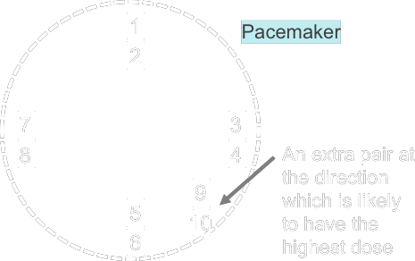

| Delivering Methods |
|
Gantry |
MLC |
Couch |
| 3D Conformal RT |
✕ |
✕ |
✕ |
| IMRT |
| Segmental MLC (Step-and-Shoot) |
Step-wise
Static at one angle |
Step-wise
Static at one angle |
Static |
| Dynamic MLC (Sliding Window) |
Static |
Dynamic |
Static |
| Intensity Modulated Arc Therapy (IMAT) |
Rotating |
Dynamic |
Static |
| Serial Tomotherapy |
Rotating |
Dynamic |
Step-wise
Static during one rotation |
| Helical Tomotherapy |
Rotating |
Binary Leave
modulating a fan beam |
Moving |
| Robotic RT |
|
|
|
|
| Anatomical Position |
| Supine |
|
| Prone |
|
| Left Lateral Recumbent |
|
| Right Lateral Recumbent |
|
| Fowler's |
|
| Trendelenburg |
|
|
| CT on-rail |
CT matching on the same rail as LINAC patient couch |
| 3 Phase Planning CT |
arterial + venous + washout scan
|
| SRS with ExactTrac |
- Load plan
- Set up patient + localiser
- Set patient couch until ExacTrac IR camera detect all reflective balls
- capture kV using ExacTrac to adjust patient position
|
| Cat I Patient |
Complete treatment within 45 calendar days (QEH standard)
|
| Pacemaker |
Type
| Bradycardia Pacemaker |
| Resynchronisation Pacemaker |
| Defibrillator |
Detect Tachycardia ( ↑ heart rate)
Detect Ventricular Fibrillation (abnormal heart rhythm)
|
Effects of Radiation [1]
| CMOS Circuit |
Complex
Low power consumption
|
Modify threshold
|
|
Cumulative Dose |
|
Neutron Induced Upsets |
↑ LET particles (p or secondary n) → 1/0 change in RAM
∴ ↓ photon energy
× proton
|
|
Dose Rate |
primarily transient
manifest as noise
|
|
Magnetic Field |
|
Electromagnetic Interference (EMI) |
|
ICP/ICD Dose Estimation
|
> 10 cm from field edge / (for IMRT) from 50% isodose line
→ measure if coplanar/vertex beam
|
|
< 10 cm from field edge / (for IMRT) from 50% isodose line
→ measure
|
|
< 3 cm from field edge / (for IMRT) from 5% isodose line
→ calculate from TPS
|
|
dose-to-water (even though CIEDs are actually electronic device) |
|
outside Tx field
→ mainly low energy scatter (e.g. 6 MV beam ~ 1.5 MeV in field -vs- 400 keV out field)
→ :) flat energy response
|
Notes
|
modern CMOS circuit
→ complex
→ ↓ power consumption
→ might modify threshold
|
|
typically located 1 - 3 cm below skin (min. 0.5 cm) |
|
ICP/ICD Dose
↑ modulation, ↑ head scatter
uarr; treatment volume ↓, ↓ patient scatter
max at surface, decrease to dmax, than relatively constant
|
|
(QEH) normally for plan below belly button
→ x pacemaker monitoring

|
|
| Hypofractionation |
effective dose to normal tissue < to tumour
e.g. EUD Equivalent Uniform Dose
|